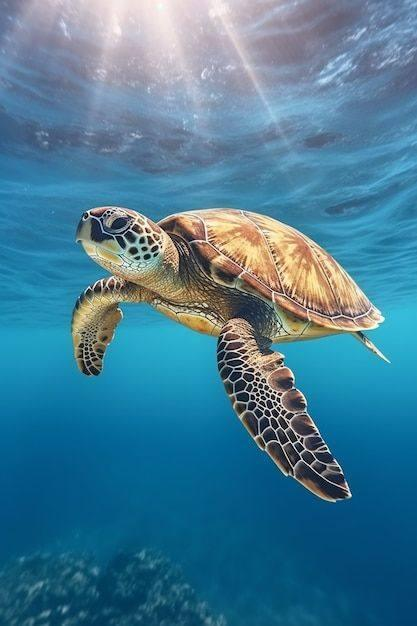

Šnorchlování se želvami v Marsa Alam: Abu Dabbab, Marsa Mubarak, nebo Marsa Igla?

Mořské želvy patří k nejkrásnějším setkáním, která Rudé moře nabízí, a v okolí Marsa Alam máte obzvlášť dobrou šanci. Želvy se pasou na mělkých loukách mořské trávy a takových zátok je tu hned několik. Která je pro vás ta pravá? Tady je naše upřímné srovnání.
Ve zkratce
- Abu Dabbab: želvy velmi pravděpodobně, ale často hodně lidí.
- Marsa Mubarak: želvy a největší šance na dugonga. Nejklidněji je ráno.
- Marsa Igla: chráněná zátoka s mořskou trávou, mnohem klidnější, ideální v malé skupině.
- Nejlepší čas: brzy ráno.
Abu Dabbab: nejznámější želví zátoka
Abu Dabbab leží severně od Marsa Alam, přímo u pobřežní silnice směrem na Hurghadu. Velká písečná zátoka s mořskou trávou je známá želvami, které tu žijí natrvalo. Setkání je tu velmi pravděpodobné.
Háček: Abu Dabbab patří k nejoblíbenějším plážím v celé oblasti. Hotely stojí přímo u zátoky a výletní skupiny sem jezdí z Marsa Alam, a dokonce i z Hurghady. V poledne může být ve vodě těsno.
Pro koho: hosté, kteří bydlí přímo u zátoky a můžou jít do vody brzy.
Marsa Mubarak: největší šance na dugonga
Marsa Mubarak leží dál na sever, nedaleko Port Ghalib a letiště. I tady se želvy pasou na mořské trávě a zátoka platí za místo, kde se na tomto pobřeží dugongové (mořské krávy) objevují nejčastěji.
Upřímně řečeno, dugong je i tak otázkou štěstí. Podle našich zkušeností se to podaří zhruba každý čtvrtý až pátý den. Ráno a pozdě odpoledne je v zátoce mnohem klidněji než v poledne.
Pro koho: ti, kdo touží vidět dugonga a mají trochu trpělivosti.
Marsa Igla: klidnější alternativa
Marsa Igla je chráněná zátoka s loukami mořské trávy, kde se pasou mořské želvy. Většinu dní tu vidíme aspoň jednu a ve šťastné dny kolem propluje i dugong. Zátoka je méně známá než Abu Dabbab, a právě to je její výhoda.
Na našem šnorchlovacím dni spojujeme Marsa Igla se Sharm El Luli v národním parku Wadi El Gemal a obědem v beduínské restauraci v Marsa Tondoba.
Pro koho: všichni, kdo chtějí vidět želvy bez davů.
Nejlepší čas
Brzy ráno. Želvy se krmí celý den, ale ráno bývá voda klidnější a velké výletní skupiny tu ještě nejsou. Ranní hodiny se považují za nejlepší i pro dugongy. Za větrných dnů volíme zátoky, které jsou chráněné.
Želvy žijí v těchto zátokách celý rok, takže tu není žádná mimosezóna. Voda je nejteplejší od července do října (asi 28–29 °C) a nejchladnější od ledna do března (asi 22–23 °C).

Jak se chovat ve vodě
- Držte se aspoň dva až tři metry od zvířete.
- Nesahejte, nekrmte, nepronásledujte. Když se želva vynořuje nadechnout, uvolněte jí cestu.
- Nestoupejte na mořskou trávu ani na korály.
- Používejte opalovací krém šetrný k útesům, nebo ještě lépe tričko s UV ochranou.
Závěr
Želvy můžete vidět ve všech třech zátokách. Rozdíl je hlavně v tom, s kolika lidmi se o vodu dělíte. Pokud máte rádi klid: vyrazte brzy, v malé skupině a s průvodcem ve vodě.
Časté otázky
Dají se v Marsa Alam vidět želvy celý rok?
Ano. Mořské želvy žijí v zátokách s mořskou trávou celý rok. Největší rozdíl dělá klidná, čistá voda a málo lidí v zátoce, proto se vyplatí vyrazit brzy.
Potřebuji ke šnorchlování se želvami loď?
Ne. Do Abu Dabbab, Marsa Mubarak i Marsa Igla se vstupuje z pláže. Do vody jdete přímo z břehu, takže žádná loď a žádná mořská nemoc.
Zvládnou to i začátečníci a slabší plavci?
Ano. Za klidného moře jsou zátoky mělké a chráněné. Se záchrannou vestou a s průvodcem hned vedle vás ve vodě to začátečníci zvládají bez problémů.
Kolik stojí šnorchlovací výlet za želvami?
Náš celodenní výlet stojí 55 € za osobu, včetně vyzvednutí z hotelu, vybavení, průvodce ve vodě, oběda a poplatků za národní park. Platíte v den výletu, nic předem.
Náš šnorchlovací den z vašeho hotelu
Marsa Igla, Sharm El Luli a oběd u moře. Nikdy víc než 15 hostů, 55 € za osobu, vše v ceně.
Zeptejte se na termín přes WhatsAppOdpověď do 2 hodin · Bez zálohy · Zrušení zdarma do 24 h předem